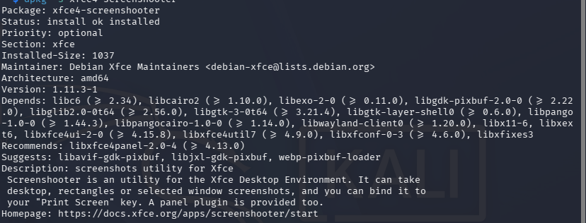
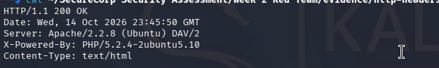
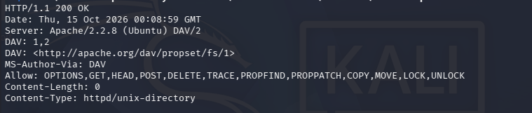

Documented Findings
04
Initial assessment observations
A documented security assessment conducted in an isolated VirtualBox lab using Kali Linux and Metasploitable2. The project covers network reconnaissance, HTTP security observations, WebDAV investigation and authentication-log review.
Documented Findings
Initial assessment observations
Lab Systems
Kali Linux and Metasploitable2
Evidence Screenshots
Nmap, HTTP headers and WebDAV
Search the documented observations below. Findings are preliminary and do not automatically establish exploitability.
Showing all 4 findings.
The target HTTP response identified Apache 2.2.8 and PHP 5.2.4.
Potential risk: Unsupported or unpatched software may expose known weaknesses.
Recommended action: Upgrade unsupported software, apply security updates and disable unnecessary services.
Evidence: Week-2-Red-Team/evidence/http-headers.txt
HTTP response headers exposed server and PHP version information.
Potential risk: Version disclosure can help an attacker identify software for further investigation. It does not prove exploitability.
Recommended action: Minimize unnecessary version disclosure and review HTTP headers.
Evidence: Week-2-Red-Team/evidence/http-headers.txt
WebDAV-related HTTP capabilities were investigated during reconnaissance.
Potential risk: Insecure permissions or unnecessary write access could permit unauthorized file operations.
Recommended action: Verify permissions, restrict access and disable WebDAV or unnecessary write methods if not required.
Evidence: Week-2-Red-Team/evidence/webdav-options.txt
Local target logging was observed, but successful delivery and storage of remote syslog messages on Kali could not be confirmed.
Potential risk: Unverified centralized logging can make cross-system investigation more difficult.
Recommended action: Verify log delivery, storage, retention and monitoring.
Evidence: Week-3-Blue-Team/evidence/kali-auth-monitoring.txt
No matching findings found. Try another search.
This chart represents the four documented finding categories. It is a count of findings, not a calculated risk score.
Assessment note: These classifications are preliminary. Further validation is required before treating findings as confirmed exploitable vulnerabilities.
Screenshots collected during the lab assessment. Select a screenshot to open the original image.

Screenshot documenting network service discovery in the isolated lab.
View scan text
Screenshot documenting observed HTTP response information.
View headers text
Screenshot documenting the WebDAV-related HTTP capability investigation.
View OPTIONS outputText evidence collected during Kali Linux authentication-log review.
Open monitoring evidenceAssessment and monitoring system
Attacker / assessment VM
Intentionally vulnerable lab target
Target VM
Isolated educational environment
Testing restricted to designated systems
Evidence and preliminary findings have been documented. Further validation and remediation verification are recommended.
Limitations: This project is an educational lab assessment, not a complete penetration test. Remote syslog forwarding remains unverified. No claim is made that every vulnerability has been identified or that all observations are exploitable.